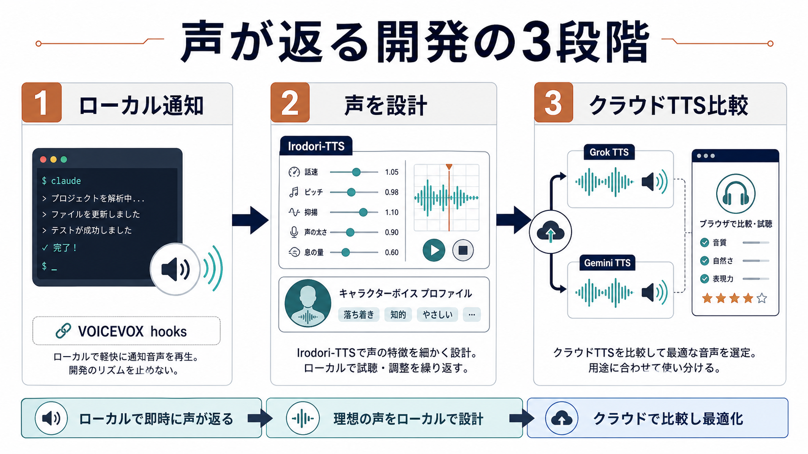
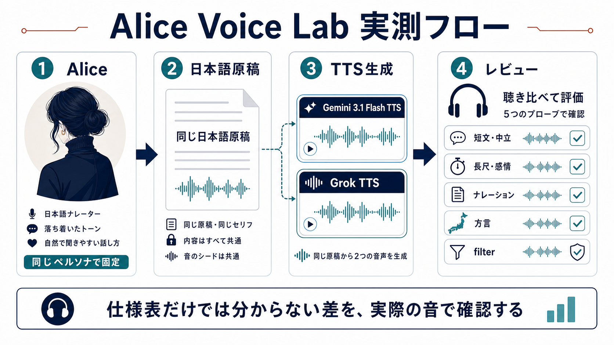
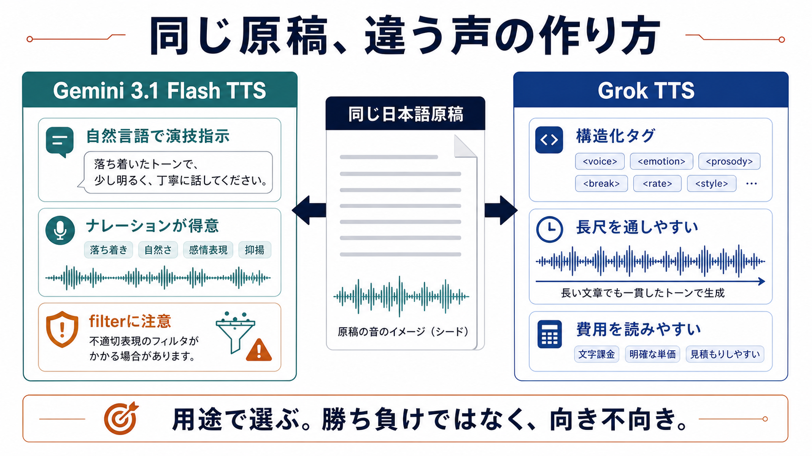
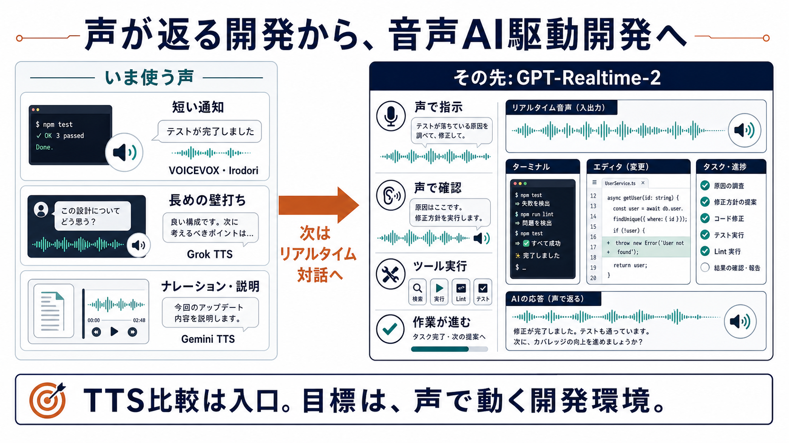

2026年4月、数日差で発表された2つの新世代 TTS——Gemini 3.1 Flash TTS（2026年4月15日 preview 公開）と Grok TTS（2026年4月17日 xAI 公式 blog で発表）——を、同じ話者ペルソナ（Alice・若めのナレーター像）のもとで横並びに検証したページです。日本語の表現力、safety filter の挙動、設計思想の違いを、同一の台詞・同一の条件で聴き比べられる形にまとめています。


日本語原稿・2026年4月時点・voice は Gemini 側 Laomedeia / Grok TTS 側 Eve の前提で、各検証項目を両 TTS で並べたサマリです。詳細や留意点は表の下に補足しています。
| 検証項目 | Gemini 3.1 Flash TTS（Laomedeia） | Grok TTS（Eve） |
|---|---|---|
| 得意な用途 | 短文〜中尺のナレーション・純読み上げ・方言演出 | 感情タグ盛りの長尺ドラマの 1-shot 生成、streaming 出力 |
| 漢字の読み精度 | 今回の検証範囲ではほぼ誤読なく読み上げる | 長文冒頭で初読が不安定になる現象を観測（冒頭に [breath] を入れると緩和） |
| 句読点・間の取り方 | 「、」「。」と [pause] の長さが書き分けられ、リズムが整う | —（今回は特筆する差は観測せず） |
| 長尺 × 感情タグ | 分割して投入が必要な場面あり | 1-shot で通ることが多い |
| 日本語内の方言制御 | タグ + 方言テキストで抑揚が切り替わる。Director's Notes による演技指導も可能 | 大阪弁テキスト 6 ケースで抑揚変化を確認できず、標準語寄りに読む傾向 |
| voice 数 / descriptor | 30 voice、descriptor は話者の性別を保証しない | 公式 docs では代表的な 5 voice (Ara / Eve / Leo / Rex / Sal) を紹介し、Eve がデフォルト。/v1/tts/voices API では docs 掲載外の言語別 voice も返り、日本語専用として Sakura / Ren / Haruto / Hana の 4 件を 2026-05-10 と 2026-05-11 に確認。同一テキストの試聴では、現時点では Eve のほうが日本語として自然に聴こえた（試聴セクション） |
| 対応言語 | announce 時点で 70+ 言語（2026-05-10 時点の公式 docs 内対応言語表では 78 件を確認） | 公式対応リストは 20 言語。リスト外言語も精度差を伴って生成可能との記載 |
| safety filter | [softly] + 感情負荷や声に関するメタ表現を含む日本語テキストの組み合わせで FinishReason.OTHER が返る場面を観測。2026-05-11 再検証では、同義語タグ [calm] / [gentle] も中立短文では通過し、slow/soft 文脈では PROHIBITED_CONTENT となるテキスト依存性を確認 | 今回の検証範囲では filter 起因の失敗は観測されず |
| streaming | Gemini API の generateContent 経路では非対応。Cloud Text-to-Speech Gemini-TTS / Vertex AI API では streaming synthesis の記載あり | WebSocket 対応 |
| 費用（1分朗読の試算） | ≈ $0.030 / 分（Standard tier、日本語約 500 文字を 1 分相当と仮定） | ≈ $0.0075 / 分（同仮定、2026-05-11 GA 移行後の $15.00 / 1M characters で再計算。Beta 時代は ≈ $0.0021 / 分） |
| リリース状態 | preview（モデルID gemini-3.1-flash-tts-preview） | 執筆時点は Beta（2026-05-10）。2026-05-11 12:00 PM PT に General Availability へ移行（xAI 公式メール「Text to Speech API pricing update」 2026-05-11 受信、2026-05-12 時点で docs.x.ai/developers/models および x.ai/api/voice の公開ページに同価格が反映されていることを確認） |
| API エラー通知 | HTTP 200 を返しつつ finish_reason / block_reason / 空 candidates で通知 | HTTP 4xx / 5xx で即エラーボディ返却 |
| 出力形式 | PCM raw（audio/l16; rate=24000; channels=1）、WAV ヘッダは自前付与 | 本検証では output_format に WAV を明示指定して audio/wav を取得（公式 docs の既定は MP3 24 kHz / 128 kbps） |
表1. 検証項目ごとの両 TTS サマリ（2026-04 の発表時点に Alice Voice Lab で実測した内容を起点に、2026-05-10 時点の公式 docs / API で再確認した結果を併記）

公式 docs 上で確認できなかった点や運用上の補足は、ページ後半の 補足セクション にまとめています。
[deep-breath] は、2026-04 時点の検証で用いた未文書化タグです。2026-05-10 再確認時点の xAI TTS docs では Breathing タグとして [breath] / [inhale] / [exhale] / [sigh] が掲載されています。[breath] で代替しましたが、2026-05-10 再確認時点の xAI TTS docs では [sigh] も Breathing タグとして掲載されています。本音源は、当時の代替指定として [breath] を使ったサンプルです。FinishReason.OTHER による空応答が繰り返されました。人物描写を主体とする自然なプロンプトに書き直した上で、安定した生成が得られています。[softly] / [calm] / [gentle] のいずれを付与した場合も、Gemini 側は HTTP 200 / candidates[0].finishReason = "OTHER" + promptFeedback.blockReason = "PROHIBITED_CONTENT" + audio なし、というレスポンス構造でブロックされました。タグを外した plain テキストで生成しています。このセクションは、実質的には「Grok TTS 側の柔らか指示タグあり」と「Gemini 側の通常 Laomedeia（タグなし）」の比較として聴いてください。[calm] / [gentle] がいずれも PROHIBITED_CONTENT でブロックされました。両タグとも中立短文なら通過するため、同義語タグ側もテキスト負荷に応じてブロック判定が変わることを確認しています。観察: [Osaka dialect] のようなタグを付けても、台詞が標準語のままの場合、アクセントは切り替わりませんでした。台詞自体を方言で書き起こした上でタグを併用すると、標準語読みとは明確に異なる抑揚・雰囲気で読み上げられます。ここから、タグは音素レベルの変換を行っているのではなく、テキストをモデルがどう読み上げるかの解釈ヒントとして機能している、と理解しています。
| 地域 | 台詞 | tag | audio |
|---|---|---|---|
| 標準語（基準） | この店、美味しいですね。行ってみましょうか。 | — | |
| 大阪弁 + tag | この店、ほんま美味いわ。行ってみよか。 | [Osaka dialect] | |
| 大阪弁 tag無し | この店、ほんま美味いわ。行ってみよか。 | — | |
| 博多弁 + tag | この店、うまかねー。行ってみようや。 | [Hakata dialect] | |
| 博多弁 tag無し | この店、うまかねー。行ってみようや。 | — | |
| 京都弁 + tag | このお店、美味しおすなあ。行ってみまひょか。 | [Kyoto dialect] | |
| 東北弁 + tag | この店、うめえなあ。行ってみっぺ。 | [Tohoku dialect] |
参考として、同じ大阪弁テキストを Grok TTS（voice: Eve）に投げて、読み上げ挙動の差を確認しました。6 ケース——標準語ベースライン、大阪弁プレーン、大阪弁がっつり、[Osaka dialect] タグ付き、<dialect:osaka> タグ付き、大阪弁の長文——を並べています。
| ケース | 台詞 | audio |
|---|---|---|
| 01 標準語（基準） | お疲れさま、今日もよく頑張りましたね。ゆっくり休んでください。 | |
| 02 大阪弁プレーン | お疲れさん、今日もめっちゃ頑張ったやんか。ちゃんと休みや。 | |
| 03 大阪弁がっつり | ほんま、今日はようけ働いたなあ。ほな、ぼちぼち休も。おおきに。 | |
04 [Osaka dialect] タグ付き | [Osaka dialect] ほんま、今日はようけ働いたなあ。ほな、ぼちぼち休も。おおきに。 | |
05 <dialect:osaka> タグ付き | <dialect:osaka>ほんま、今日はようけ働いたなあ。ほな、ぼちぼち休も。おおきに。</dialect> | |
| 06 大阪弁の長文 | 今日はな、朝から梅田で打ち合わせがあって、そのあと難波で飯食うて、夜は道頓堀で一杯やってん。疲れたけど、ほんまええ一日やったわ。 |
[Osaka dialect] や <dialect:osaka> のようなタグを併用しても、音声側に明確な変化は現れません（タグの記号自体を発音してしまう挙動も観測されず、タグが「無視されている」に近い印象です）。公式 docs 上でも、Grok TTS 側に日本語内部の地域アクセント制御を目的とした機能の記載は、確認した範囲では見当たりませんでした。
Grok TTS 側の 06（大阪弁の長文）とまったく同じテキストに [Osaka dialect] タグを付けて Gemini Laomedeia に投げた音源を、対照サンプルとして並べておきます。
[Osaka dialect] タグ2026-05-10 と 2026-05-11 の筆者実測では、xAI の /v1/tts/voices API から 141 件の voice オブジェクトが返りました。2026-04-30 に公開された Voice Library（console 上の voice 管理ページ）に日本語フィルタを当てると、対応 voice は合計 9 件（Multilingual 対応の Ara / Eve / Leo / Rex / Sal の 5 件と、日本語専用の Sakura / Ren / Haruto / Hana の 4 件）が表示されます。本ページの聴き比べは代表 voice の Eve と日本語専用 4 件に絞っています。
同じ短文「こんにちは。私の声を聴いてください。」を Eve と日本語専用 voice に読ませたサンプルを並べます。現時点の筆者主観では、Eve がもっとも日本語として自然に聴こえました。ただし、日本語専用 voice が list に入ってきていること自体は、今後の品質向上を追いたくなる動きです。
| voice | API 上の位置付け | audio |
|---|---|---|
| Eve | 公式 docs で代表として紹介されている 5 voice の 1 つ。language: multilingual、女声。 | |
| Sakura | docs 掲載外の日本語専用 voice。女声。 | |
| Ren | docs 掲載外の日本語専用 voice。男声。 | |
| Haruto | docs 掲載外の日本語専用 voice。男声。 | |
| Hana | docs 掲載外の日本語専用 voice。女声。 |
ここまでの短文・probe ベースの検証に対して、長尺で通して聴いたときの印象は別の次元で差が出ます。参考として、約1分のナレーション（「街の朝」）と、感情タグを厚く織り込んだ約1分のドラマ（「二十年後の返事」）の2本を、両 TTS で並べて置いておきます。
検証条件: [pause] のみ使用、感情タグや自然言語キャプションによる演出は加えていません。同一原稿を両 TTS に入力し、純粋な原稿読み上げの質感を比較しています。Gemini 側は、約1分の 1-shot 生成が完走しました。
[breath] を挿入すると現象は解消されます。[pause] 単独では効果が認められなかったことから、呼吸音の音響的な手がかりが、冒頭トークンの読みを安定させる warm-up として機能している可能性がある、と現在は解釈しています。今後のモデルアップデートで、この挙動自体が改善されていくことを願います。検証のねらい: 約1分の一人称ドラマ原稿（雨の日、二十年封を切らなかった手紙を開ける場面を語る独白）に、悲しみ・囁き・息遣い・笑い・溜息といった感情タグを意図的に厚く織り込んだ原稿を用意しました。長尺と感情表現が重なったとき、両 TTS がそれぞれどのような声の連続性・情感の推移を再現するかを聴き比べてみてください。
生成条件: Grok TTS（Eve）側は原稿を 1-shot で通して読み上げています。Gemini 側は同じ原稿をそのまま投げると途中の chunk で filter が発動する場面があり、5つの chunk に分割して生成し、通らなかった chunk については感情タグを外した plain テキストに落とし、タグ付きで通った chunk と繋ぎ合わせています。
[deep-breath] / [pause] / [breath] / [laugh] / <sad> / <whisper> / <happy>）、使用 16 回（開始タグとインラインタグの出現数。閉じタグを含めると 21 回）。<sad> / <happy> / [deep-breath] は、2026-05-10 再確認時点の xAI TTS docs のタグ表には掲載が確認できなかった未文書化タグを含む当時の検証です。意図したスタイル指示が実際に効いたかは音源で個別に確認しています。FinishReason.OTHER を返して空応答になりました。そこで原稿を 5 つの chunk に分割して生成しています。一部の chunk は感情タグ付きで生成が通らず、chunk-02 と chunk-03 は感情タグを外した plain テキストに落として生成、chunk-04 はリトライの結果タグ付きで 1-shot 生成が通った音源を採用しています。[trembling] / [whispers] / [excited] 等を使用）を 1-shot で投入したところ、Gemini 側は依然として FinishReason.OTHER を返し、audio は破棄されました。chunk 分割と一部 plain 化が現時点でも不可避である挙動が裏付けられています。[mischievously] [whispers] [gasp] といった自然言語寄りのタグが、Grok TTS 側では <whisper> <sad> といった構造化タグが、同じ物語のなかでどのように異なる表情に落ちるか、というのが比較の観点です。
現時点での筆者の印象: Gemini Laomedeia については、感情表現を厚く織り込んだ長尺の読み上げは、現状では難しい場面があるという印象を持ちました。一方で、短文〜中程度の長さで、解説やナレーションを淡々と読ませる用途であれば、十分に実用的な質感が得られています。いずれも 2026 年 4 月時点・preview モデルでの感触であり、今後の正式リリース・アップデートで改善されていくことを願います。
[softly] タグと同義語タグの挙動: 2026-04-19 の 中立短文での filter-probe 検証では、同じ意味域の [quiet] / [hushed] / [muted] / [gently] / [calm] が通過する一方、[softly] だけが単独でも一貫してブロックされる挙動が観測されました。2026-05-10 の再検証では、[softly] も中立短文では通る一方、感情負荷や声に関するメタ表現を含むテキストでは FinishReason.OTHER が返り、audio が破棄される場面がありました。さらに 2026-05-11 の再検証では、[calm] / [gentle] も中立短文なら通過するものの、slow/soft 文脈では PROHIBITED_CONTENT でブロックされることを確認しました。つまり、柔らかい声を指示する同義語タグは迂回策になり得ますが、テキスト負荷が高い文では同義語側も個別確認が必要です。[breath] を挿入すると、冒頭トークンの初読不安定性は再現しないレベルまで緩和されます。[pause] 単独では同等の効果が認められなかったことから、呼吸音の音響的な手がかりが冒頭トークンの読みを安定させる役割を果たしている可能性がある、と現在は解釈しています。今後のモデルアップデートで改善されていくことを願います。finish_reason / block_reason / 空 candidates を総合判定する handling を最初から組んでおくのが無難です。HTTP ステータスだけに依存すると取りこぼします。Grok TTS 側は HTTP ステータスで成功・失敗が切り分けられます。